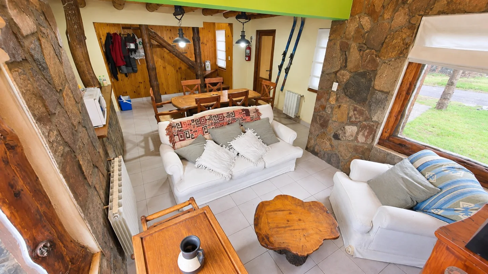

Cabaña Antú en Caviahue

Caviahue, Neuquén
Hasta 6 huéspedes · 2 dormitorios · 2 baños
Disfrutá de una estadía cómoda y acogedora en Antú, una cabaña de dos plantas, totalmente equipada y con capacidad para hasta 6 personas, ideal para familias o grupos de amigos.
En la planta baja cuenta con un dormitorio matrimonial, un baño completo con ducha, cocina equipada con horno, heladera, microondas, cafetera y pava eléctrica, y un cálido living comedor con parrilla interior y chimenea. Además, ofrece estacionamiento y un pequeño patio parquizado para disfrutar de Caviahue con comodidad e independencia.
Unidades y huéspedes
Cabaña completa
hasta 6 huéspedes · En la planta alta hay cuatro camas individuales tipo sommier y un segundo baño completo.
Comodidades
- Cocina equipada
- Chimenea en el living
- Parrilla interior
- Dos baños completos
- Patio parquizado
- Estacionamiento
- WiFi
- Calefacción
- Sábanas y toallas
Check-in desde las 14:00 · Check-out hasta las 10:00. Acepta mascotas.
Tu lugar en Caviahue
Casas, cabañas, departamentos y hostal boutique para disfrutar de la Patagonia con tu familia, amigos o pareja. Reservá online o por WhatsApp.